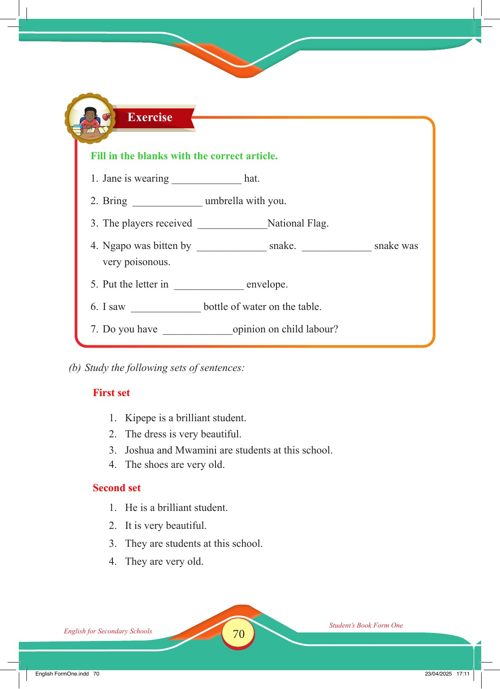

Accessible text transcript - page 70
Use the reader's read-aloud controls or select an individual segment below.
Printed book page 70. Exercise banner with a student writing at a desk beside a stack of books Exercise Fill in the blanks with the correct article. 1. Jane is wearing hat. 2. Bring umbrella with you. 3. The players received National Flag. 4. Ngapo was bitten by snake. snake was very poisonous. 5. Put the letter in envelope. 6. I saw bottle of water on the table. 7. Do you have opinion on child labour? (b) Study the following sets of sentences: First set 1. Kipepe is a brilliant student. 2. The dress is very beautiful. 3. Joshua and Mwamini are students at this school. 4. The shoes are very old. Second set 1. He is a brilliant student. 2. It is very beautiful. 3. They are students at this school. 4. They are very old. English for Secondary Schools Student’s Book Form One Return to the page image